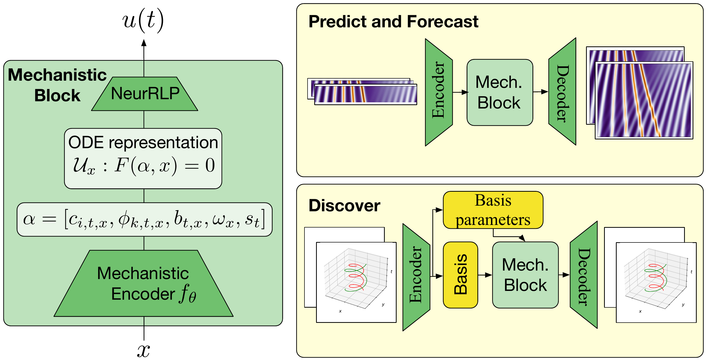
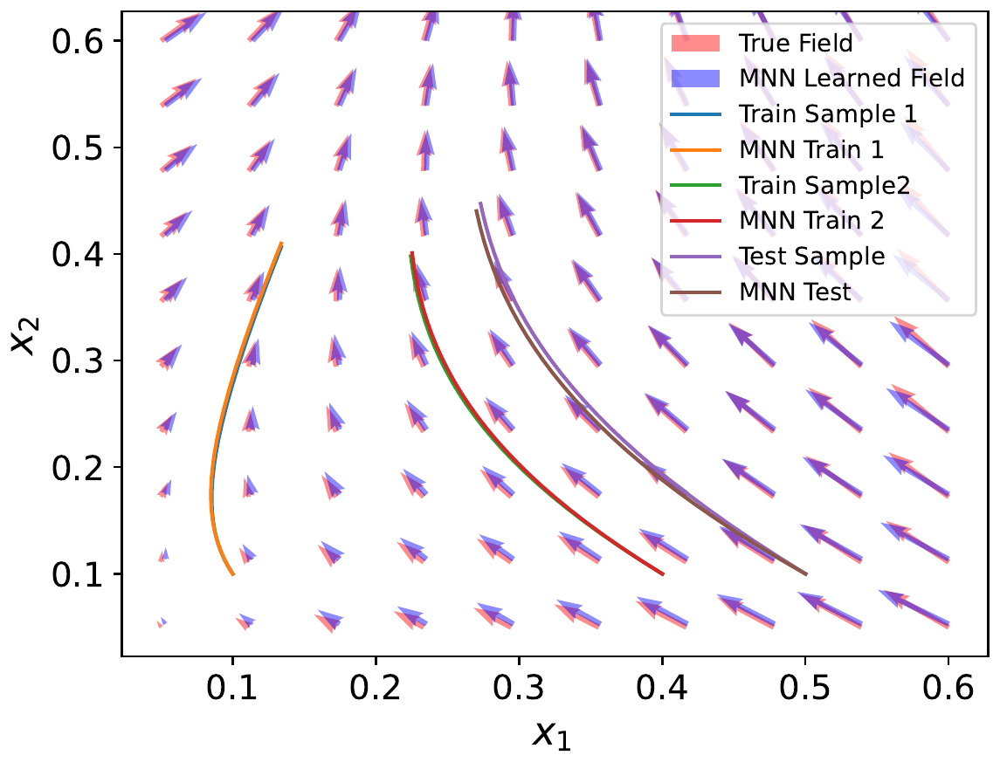
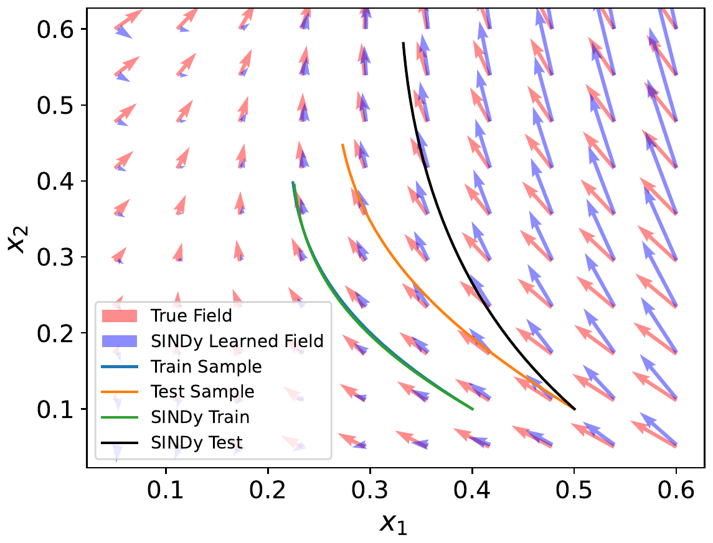
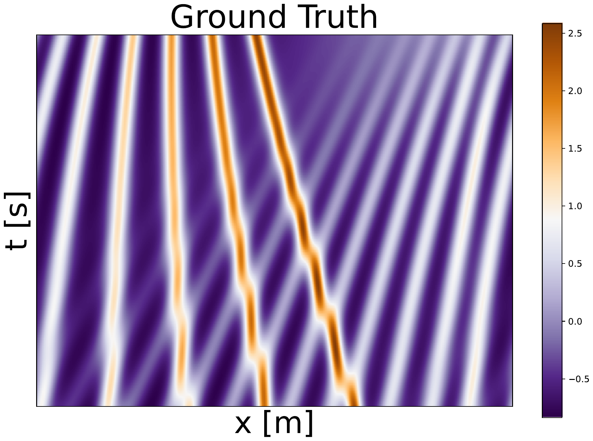
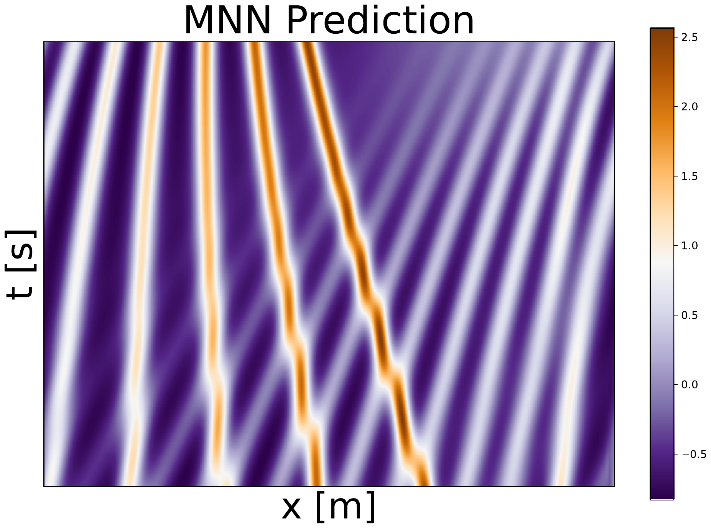
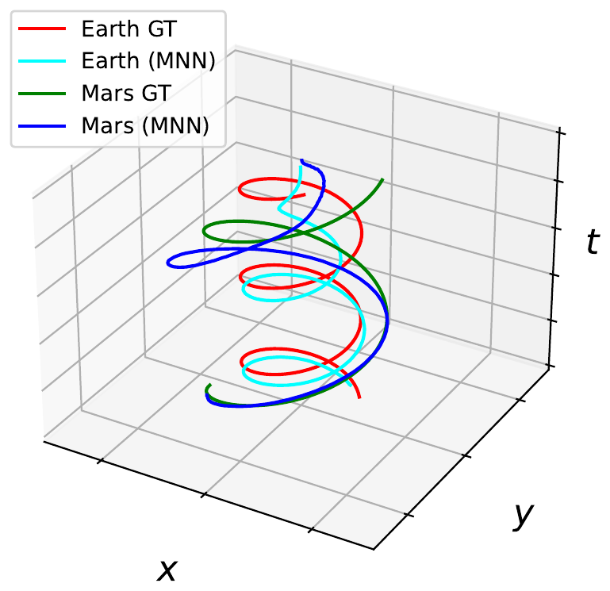

Mechanistic Neural Networks for Scientific Machine Learning
A Mechanistic Block learns governing differential equations as explicit representations, solved natively by a fast, parallel, differentiable ODE solver
Mechanistic Neural Networks add a Mechanistic Block to standard architectures that explicitly learns governing differential equations as representations, exposing the dynamics underlying data instead of hiding them in opaque weights. The block is trained with NeuRLP, a Neural Relaxed Linear Programming solver that recasts solving linear ODEs as a relaxed, equality-constrained quadratic program — yielding a differentiable solver that runs hundreds of time steps and whole batches of independent ODEs in parallel on GPU. Across five scientific machine learning settings — equation discovery, PDE solving, N-body prediction, physical-parameter inference, and time-series forecasting — the same design matches or surpasses specialized state-of-the-art methods such as SINDy, Fourier Neural Operators, and Neural ODEs.
Overview
Modeling the mechanisms behind how data evolve over time is a core scientific task, and one still largely performed by hand: domain experts translate their understanding of a phenomenon into governing equations. Mechanistic Neural Networks (MNNs) automate this in a “native” neural-network way. The key ingredient is a Mechanistic Block: a layer whose output is not a vector of numbers but an explicit family of ordinary differential equations — coefficients of derivatives, nonlinear terms, step sizes, and initial conditions — that is then solved to produce the block’s numerical output.

A Mechanistic Block has two parts: a mechanistic encoder that emits the ODE coefficients, and a solver that integrates them. Formally, the encoder produces \alpha = f_\theta(x) and a representation \mathcal{U}_x = F(\alpha, x), a family of ODEs of the general (discretized) form
\sum_{i=0}^{d} c_{i,t,x}\, u^{(i)}_t \;+\; \sum_{k=0}^{r} \phi_{k,t,x}\, g_k(t, u_t, u'_t, \ldots) \;=\; b_{t,x}, \qquad [u_{t=1}, u'_{t=1}, \ldots] = \omega_x,
with d linear terms (derivatives u^{(i)}), r nonlinear terms g_k, a right-hand side b, learnable step sizes s_t, and initial/boundary conditions \omega_x. All of these coefficients are produced by a standard neural network f_\theta in a single forward pass; the step sizes and initial conditions can themselves be learned, which traditional solvers do not allow. Coefficients can also be made time-independent or shared across a dataset to discover a single universal governing equation.
A native, parallel ODE solver
The obstacle to putting ODEs inside a network is the solver. General-purpose methods such as Runge–Kutta are sequential (recurrent gradients, error accumulation over long rollouts) and handle batches of independent ODEs as independent computations — too slow when each forward pass must solve many ODEs over many steps. MNNs instead introduce NeuRLP, a Neural Relaxed Linear Programming solver, building on a classical result that solving linear ODEs can be reduced to solving a linear program (Young 1961; Rabinowitz 1968).
The construction expresses the discretized ODE as the constraints of a linear program: equality constraints encoding the ODE at each time step, initial-value constraints, and smoothness constraints derived from forward- and backward-time Taylor expansions that keep neighbouring function and derivative values \epsilon-close. The program then minimizes the smoothness error \epsilon. Because linear-program solutions are not continuously differentiable and do not parallelize well on GPU, the authors relax the program into an equality-constrained quadratic program (Wilder et al. 2019; Pervez et al. 2023),
\min_{z}\; \tfrac{1}{2} z^\top G z + \delta^\top z \quad \text{s.t.}\quad \tilde{A} z = \beta + \xi,
with G = \gamma I a small quadratic regularizer and \xi slack variables. This is solved through its KKT system — dense Cholesky factorization for small problems, a sparse conjugate-gradient method for large ones — and differentiated with established differentiable-optimization techniques (Amos and Kolter 2017), computing sparse gradients only for the nonzero entries of the constraint matrix. Nonlinear ODEs are handled by adding auxiliary variables for each nonlinear term and a consistency loss tying them to the nonlinear function of the solution, so learning and solving happen jointly.
The result is a solver with three properties traditional solvers lack: step parallelism (hundreds of time steps solved at once), batch parallelism (batches of independent ODE systems in a single forward pass), and learned step sizes. The paper proves an O(s^2) error bound over n steps for a second-order ODE — comparable to the Euler method — and reports that on a sinusoid-fitting task NeuRLP is about 200× faster with a lower MSE than the torchdiffeq RK4-with-adjoint baseline at 1000 steps. NeuRLP can also learn the discretization grid, refining it where the fit is poor.
Discovering governing equations
The first application pits MNNs against SINDy (Brunton et al. 2016), the gold standard for sparse equation discovery. SINDy fits a linear combination of predefined nonlinear basis functions, so it is fundamentally limited to systems that are linear combinations of those terms. MNNs use the same polynomial basis but follow it with a further learned nonlinear transformation, letting them express, e.g., \frac{d}{dt}\mathbf{x}(t) = F(p(\mathbf{x}(t))) with F a nonlinearity such as \tanh, or rational-function derivatives \frac{d}{dt}\mathbf{x}(t) = p(x)/q(x) — forms SINDy cannot represent.
On the Lorenz system, which is a linear combination of basis terms, both SINDy and MNNs recover the exact equations. On the nonlinear and rational systems, SINDy overfits the training domain and generalizes poorly, while the MNN-learned vector field stays aligned with the truth.


Learned vector fields for an ODE with rational-function derivatives, \frac{d}{dt}\mathbf{x}(t) = p(x)/q(x).
Solving PDEs
MNNs adapt to PDEs without specialized machinery: for a 1-D PDE the spatial dimension is modeled by independent ODEs (e.g. a spatial grid of 256 means 256 ODEs over the predicted time steps), and for 2-D PDEs a neural-operator model with stacked Mechanistic Blocks is used. Following the protocol of Brandstetter et al. (2022), the paper compares relative error on the 1-D Korteweg–de Vries (KdV) equation against Lie-symmetry-augmented ResNet and Fourier Neural Operator (FNO) baselines, using only 10 time steps of history where the baselines use 20.
| Method | N=512 | N=256 |
|---|---|---|
| ResNet | 0.0223 | 0.0392 |
| ResNet-LPSDA-1 | 0.0200 | 0.0284 |
| ResNet-LPSDA-2 | 0.0111 | 0.0185 |
| ResNet-LPSDA-3 | 0.0155 | 0.0269 |
| ResNet-LPSDA-4 | 0.0113 | 0.0184 |
| FNO | 0.0276 | 0.0407 |
| FNO-LPSDA | 0.0055 | 0.0132 |
| FNO-AR | 0.0030 | 0.0058 |
| FNO-AR-LPSDA | 0.0010 | 0.0037 |
| Mechanistic NN (50 sec) | 0.0039 | 0.0086 |
Without any of the stability tricks the neural-operator baselines rely on, the Mechanistic NN is competitive with FNO and its augmented variants. The model’s rollout closely matches the ground-truth solution:


Modeling dynamics: N-body, physical parameters, time series
N-body prediction. Using a basic MNN with second-order ODEs (\ddot{\mathbf{x}} = G(\mathbf{x}, \dot{\mathbf{x}})) on planetary ephemerides from the JPL Horizons database — positions and velocities for the 25 largest solar-system bodies, 1980–2015 at 12-hour steps, 70% of the series for training — the model is trained to predict 50 steps from 50 input steps, then rolled out for 2000 steps from a 50-step start. It improves on Neural ODE variants by at least a factor of ten.

| Method | Eval. MSE |
|---|---|
| ANODE | 0.0470 |
| NODE | 0.0485 |
| SONODE | 12.200 |
| MNN | 0.0034 |
Discovering physical parameters. In a two-body gravitational system (masses m_1=10, m_2=20, gravitational constant G=2), the goal is to infer the mass ratio m_1/m_2 (ground truth =2) and the distribution of force vectors by learning the force as a function of position and matching Newton’s second and third laws. Both a second-order Neural ODE (SONODE) and the MNN recover the mass ratio, but the MNN estimates the forces far more faithfully — the Neural ODE frequently gets the force direction wrong, reflected in its negative average cosine similarity.
| Method | Force MSE ↓ | Cosine sim. ↑ | Mass ratio (GT=2) |
|---|---|---|---|
| SONODE | 879 | -0.26 | 2.11 |
| MNN | 345 | 0.85 | 2.02 |
Time-series forecasting. On a benchmark of modeling the accelerations of a shaker mounted under an aircraft wing (Norcliffe et al. 2020), a basic second-order MNN sees 1,000 past acceleration values and predicts the next 4,000. It is on par with second-order Neural ODEs while converging significantly faster and reaching roughly two times lower training error.
Takeaways
Mechanistic Neural Networks turn the governing equation itself into a learnable, explicit representation, and make that practical by replacing the sequential ODE solver with NeuRLP — a relaxed-LP-to-quadratic-program reduction that is differentiable and parallel across both steps and batches. The same block, dropped into otherwise standard architectures, matches or beats specialized methods across equation discovery, PDE solving, N-body prediction, physical parameter inference, and forecasting. The authors are explicit about the limits: the method offers no guarantee that the recovered ODEs are identifiable (though in practice they tend to lie close to the true ones), and the model design space across the experiments was deliberately left largely unexplored.
The figures on this page are reproduced from the original paper, which is released on arXiv under CC BY 4.0. A copyable BibTeX entry for this page is generated below.
Citation
@inproceedings{pervez2024,
author = {Pervez, Adeel and Locatello, Francesco and Gavves,
Efstratios},
title = {Mechanistic {Neural} {Networks} for {Scientific} {Machine}
{Learning}},
booktitle = {Proceedings of the 41st International Conference on
Machine Learning (ICML), PMLR 235},
date = {2024-02-20},
url = {https://proceedings.mlr.press/v235/pervez24a.html}
}